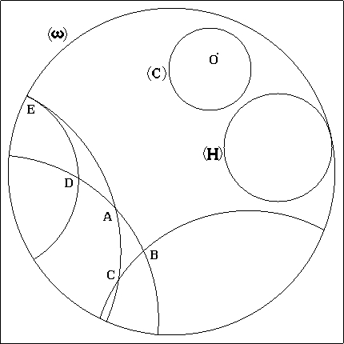

Home André Brouty
Home André Brouty

A la fin du XIXème siècle, suite aux travaux de Klein et de Riemann apparaissent les premiers modèles de géométries non euclidiennes.
Une pseudosphère est une surface à courbure constante négative obtenue en faisant tourner une tractrice autour de son asymptote. On peut visualiser ici la demi pseudosphère
On peut dessiner des triangles à angles nuls sur une telle surface. Cependant elle n'est pas un modèle complet de la géométrie de Lobatchevsky puisqu'en particulier on peut par deux points bien choisis y faire passer plusieurs géodésiques c'est-à-dire des droites.
Hilbert démontrera plus tard qu'il n'existe pas de surface euclidienne modélisant complètement la géométrie de Lobatchevsky.
Disons quelques mots du modèle de Poincaré en examinant la figure 11 ci-dessous:
 figure 11
On y voit un grand cercle noté oméga, ce sera le cercle qui va enfermer notre espace. Le plan de Lobatchevsky est l'intérieur de ce cercle le cercle non compris. Le cercle joue le rôle de l'infini. Tout point du cercle est à l'infini. Les droites sont représentées par des cercles orthogonaux au cercle oméga, on les appellera de p-droites pour la clarté du discours. Les points sont les points ordinaires.
On observe deux p-droites parallèles: (E,D) et (E,A) , deux p-droites divergentes: (E,D) et (C,B); ainsi qu'un triangle ordinaire (ABC) et un triangle à un angle nul (ADE), le point E est à l'infini.
Le cercle (C) est un cercle de centre O. Ce dernier est décentré pour des raisons que l'on examinera plus loin. Le "cercle" (H) n'est pas un cercle mais un horocycle, il est tangent au cercle oméga.
Ce modè vérifie tous les axiomes de la géométrie euclidienne sauf celui des parallèles.
Bien sur dans un tel modèle c'est la métrique qui est modifiée. Contrairement aux apparences les droites ont bien une longueur infinie car la métrique n'y est pas euclidienne. Poincaré décrit très bien dans "La science et l'hypothèse" comment on vit dans un tel espace. L'idée est que l'on devient de plus en plus petit en s'approchant du cercle oméga de tel sorte qu'on ne puisse jamais l'atteindre.
De manière plus pécise la distance des points A et B sur la p-droite est donnée par la formule:
d(A,B) = 1/2|log(A',B',A,B)|Où A' et B' sont les points d'intersection de la p-droite (AB) avec le cercle oméga et n'appartiennent pas à l'espace, et (A',B',A,B) le birapport des quatre points. Cette formule représente bien une distance, et elle assure la mesure infinie des p-droites. Elle explique pourquoi le centre O du cercle (C) apparait décentré alors qu'il est bien au centre mais pour la distance d qui n'est plus euclidienne.
Il existe bien d'autres modèles d'une telle géométrie dont nous n'avons pas parlé comme le modèle de Klein ou le modèle à hyperboles.
Il existe un programme tournant sur macintosh qui permet de bien se familiariser avec le modèle de poincaré.
Home André Brouty